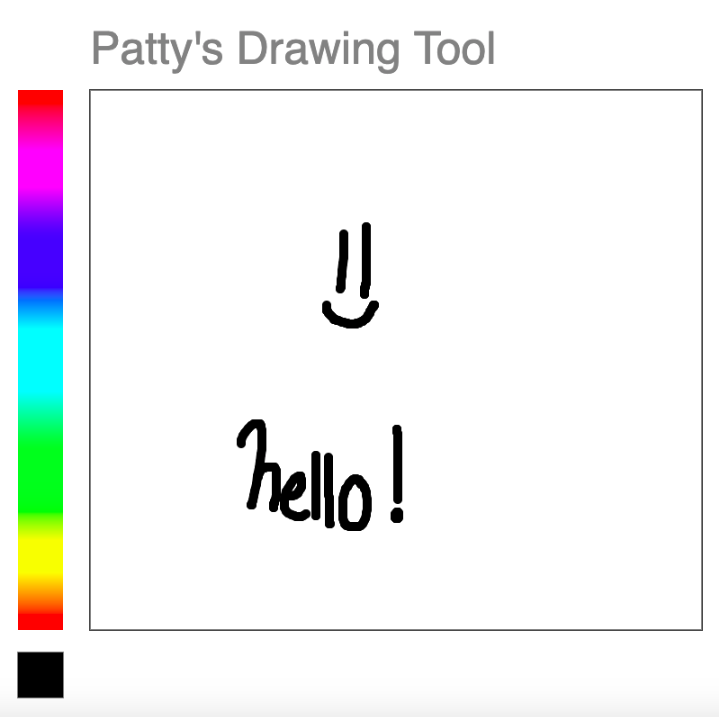
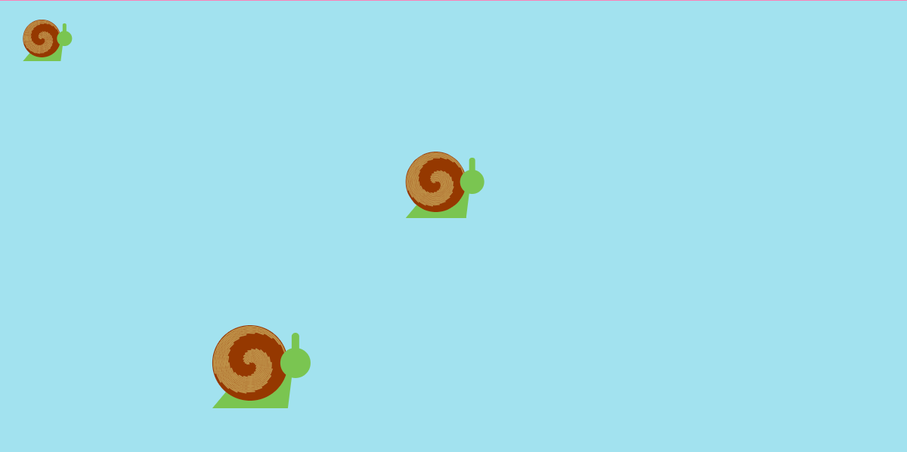
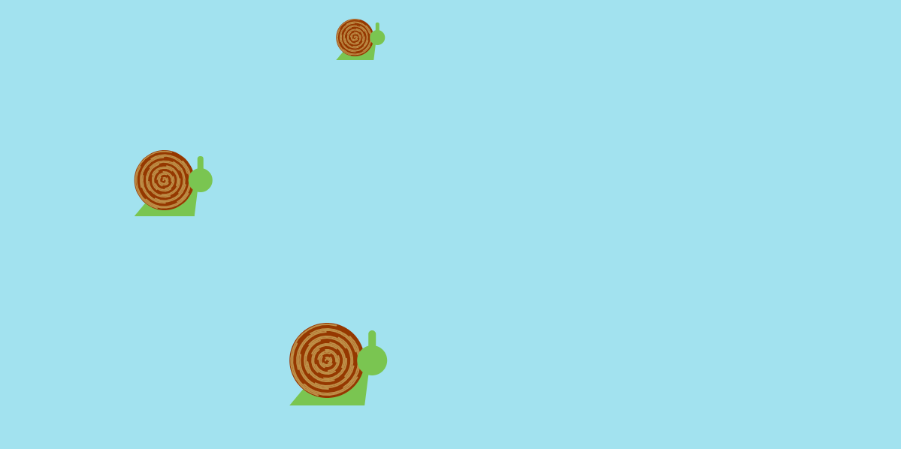
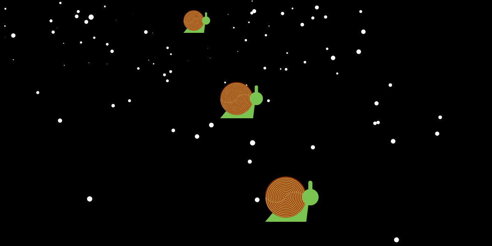
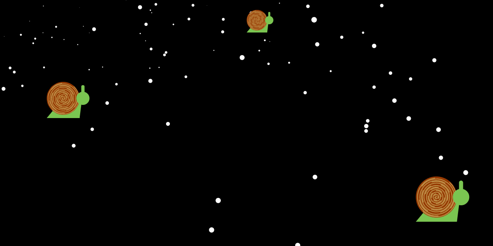

Exercise 6
Here is my drawing tool coverted into P5 js. The color selector is currently not working.
see exercisesee code
Exercise 4
05:30am
07:00am
12:30pm
07:00pm
My clock uses snails to represent the passage of time. The smallest snail represents seconds, which would hold the lowest amount of time. On the other hand, the largest snail holds the most amount of time. The scene gets darker after 12pm.
see projectsee code